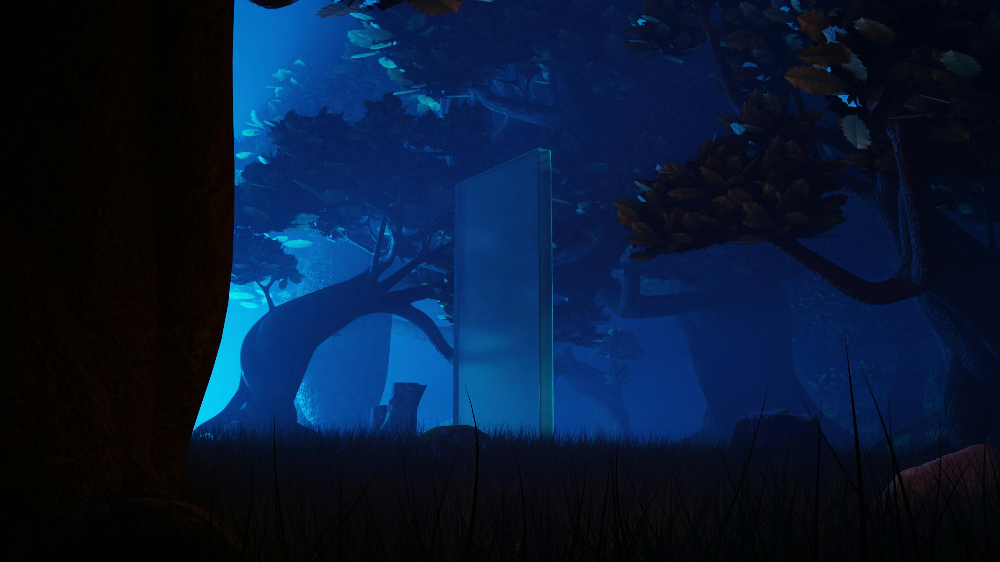

Here in the portals section, well honestly we don't know where anyone comes from in this room. They're portals, how? Where? So many questions and not enough answers. Hmm maybe I will try and follow someone through a portal and see where it leads...
GrassLand's Portal
A portal to GrassLand. You've heard of the place but for some reason, but for some reason all you can think off is "The Grass isn't always greener" whatever that means.
Shimmer Portal

A Shimmering Portal *You just barely notice a small shimmer in the distance* It is said to give a tingle sensation to those who it calls to.